Test Results & Figures¶
What the unit tests of every package prove, shown as figures. Two rules hold for every image on this page:
- The code is the package's own. Each figure runs the package core (C++ through a small driver in
Scripts/docs_figures/host/drivers/, Python by importing the module) on the scenario of one of its tests — same seeds, noise and gains — and only draws the result. Nothing is re-implemented for the picture. - The input is stated. Sensor packages get a scene (frame or point cloud with detections and tracks); estimators and controllers get charts (estimate against truth, error against its σ bound, NIS against its χ² bounds, command / estimate / true response). Where the input is synthetic, the figure title says so.
Everything here runs on a plain Linux host: no ROS 2, no GPU, no hardware. What needs one of those is listed under Not run on the host.
Host test run¶

| Area | Package | Suites passed | Cases passed | Failed | Skipped | Not run on the host |
|---|---|---|---|---|---|---|
| ROS 2 | Isaac_ROS-Object_Detection | 7/7 | 102/102 | 0 | 0 | — |
| ROS 2 | ROS2_Control_System | 5/5 | 23/23 | 0 | 0 | — |
| ROS 2 | ROS2_Flight_Controller | 6/6 | 43/43 | 0 | 0 | trajectory optimizer (CUDA kernel) |
| ROS 2 | ROS2_JetOwl_Bridge | 5/5 | 29/29 | 0 | 0 | node test (rclcpp) |
| ROS 2 | ROS2_Lidar_AI_Solution | 4/4 | 21/21 | 0 | 0 | GPU-marked tests, YUVToRGB (NVIDIA submodule data) |
| ROS 2 | ROS2_Lidar_SLAM | 14/14 | 70/70 | 0 | 0 | — |
| ROS 2 | ROS2_Mission_Planner | 5/5 | 62/62 | 0 | 0 | — |
| ROS 2 | ROS2_Monitoring | 4/4 | 35/36 | 0 | 1 | — |
| ROS 2 | ROS2_Network_Bridge | 6/6 | 48/48 | 0 | 0 | — |
| ROS 2 | ROS2_Night_Vision_OWL | 6/6 | 45/46 | 0 | 1 | — |
| ROS 2 | ROS2_Qt | 1/1 | 65/65 | 0 | 0 | dashboard/sim node and introspection tests (rclcpp, Qt) |
| ROS 2 | ROS2_RF_Spectrum | 5/5 | 11/11 | 0 | 0 | — |
| ROS 2 | ROS2_Stereo | 6/6 | 36/36 | 0 | 0 | node and ROS conversion tests (rclcpp, cv_bridge) |
| Simulation | ROS2_Hexacopter_Control | 6/6 | 42/42 | 0 | 0 | — |
| Simulation | ROS2_Mcu_Emulator | 8/8 | 41/41 | 0 | 0 | Gazebo launch test |
| GPU | CUDA | 2/2 | 2/2 | 0 | 0 | kernels and VPI (need a Jetson) |
| GPU | DeepLearning | 2/2 | 14/14 | 0 | 0 | layers and exemplar (cuDNN/TensorRT) |
| Utilities | DFRobot_I2C_Multiplexer | ⅔ | 17/21 | 2 (test_core) | 2 | C++ binding (needs the L4T i2c.h) |
| Utilities | Jetson_GPIO_Compat | 4/4 | 87/87 | 0 | 0 | — |
| Utilities | Jetson_Utilities | 8/8 | 8/8 | 0 | 0 | — |
| Firmware | JetOwl_FlightControl | 22/22 | 22/22 | 0 | 0 | — |
| Firmware | JetOwl_Vision | 3/3 | 3/3 | 0 | 0 | — |
| Firmware | Remote_UAV | 7/7 | 7/7 | 0 | 0 | — |
Generated by Scripts/docs_figures/host_tests.py: 833 of 839 cases passed in 23 packages.
A suite is one test executable (or one pytest module); a case is a gtest case, a [PASS]/[FAIL] line of the repository's small C++ harnesses, or a pytest test. An executable that reports no per-case lines counts as one case, so the firmware suites look small here even though each runs hundreds of checks.
Known failures
DFRobot_I2C_Multiplexer: TestScan::test_scan_port_no_devices and test_scan_port_with_devices mock read_byte to fail on every address, including the multiplexer's own read-back in select_port, so scan_port raises I2CDeviceNotFoundError before it scans. The test and the driver disagree on whether select_port verifies the switch; this is reported here rather than changed.
Sensors and perception — scenes¶

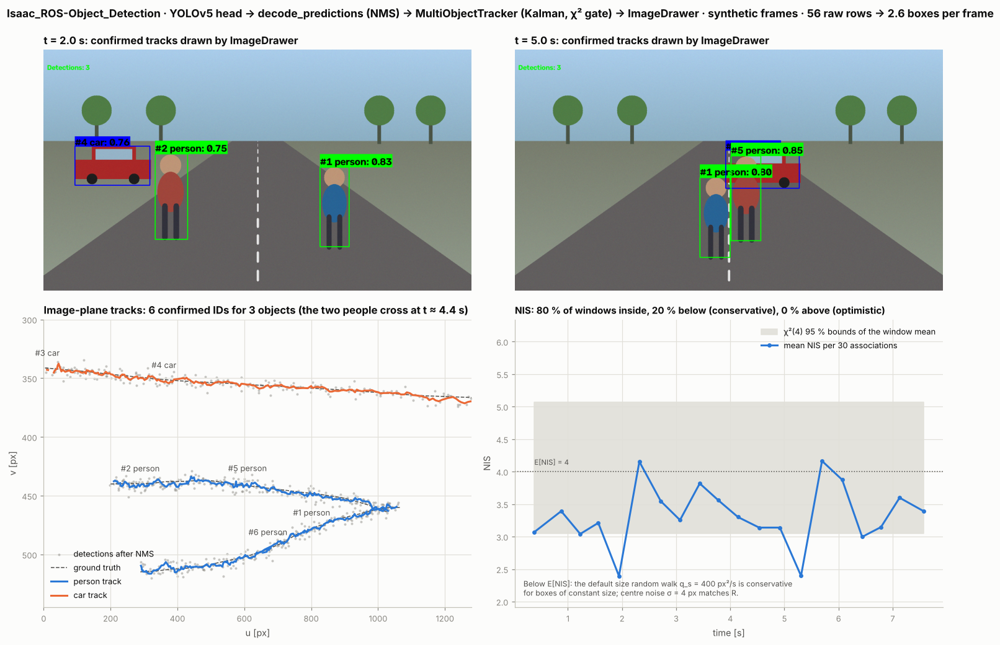
Isaac_ROS-Object_Detection on a synthetic 1280×720 road scene: a YOLOv5 head with duplicate anchors and background rows → decode_predictions (confidence filter, NMS) → MultiObjectTracker (Kalman, χ² gate) → ImageDrawer. Bottom right: NIS of the accepted associations; it sits below 4 because the default size random walk (q_s = 400 px²/s) is conservative for boxes of constant size. Six confirmed IDs for three objects: the car is born twice (a new track's velocity prior is 10·σ_pos = 40 px/s, the car moves at 160 px/s, so its second detection fails the gate), the left person's track is replaced at t ≈ 2.4 s when one detection fails association, and a short duplicate appears while the two people cross (t ≈ 4.4 s).
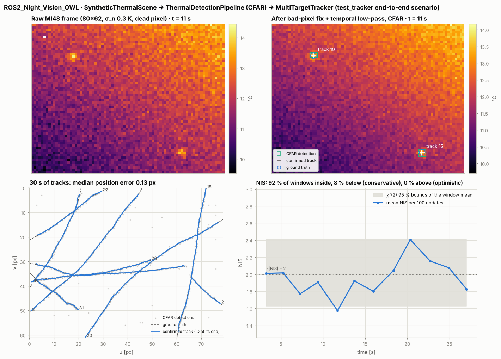
ROS2_Night_Vision_OWL, the end-to-end scenario of test/unit/test_tracker.py (seed 7): the package's SyntheticThermalScene (80×62 MI48, 0.3 K noise, a dead pixel) → ThermalDetectionPipeline (bad-pixel fix, temporal low-pass, CFAR) → MultiTargetTracker. 30 s of tracks against truth and the NIS of the 2-D position updates against its χ²(2) bounds.
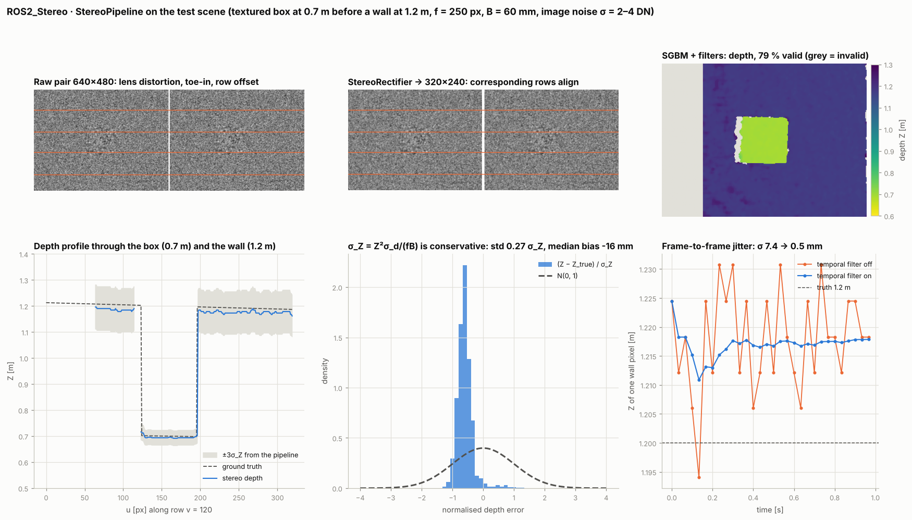
ROS2_Stereo on the test scene of tests/synthetic_scene.hpp (textured box at 0.7 m before a wall at 1.2 m): raw distorted, toed-in pair → StereoRectifier → SGBM → disparity filters → depth with σ_Z = Z²σ_d/(fB). The depth profile is compared with the ray-traced truth; the normalised error shows that σ_Z is conservative on this scene. Right: one wall pixel over 30 noisy frames with the temporal filter off and on.
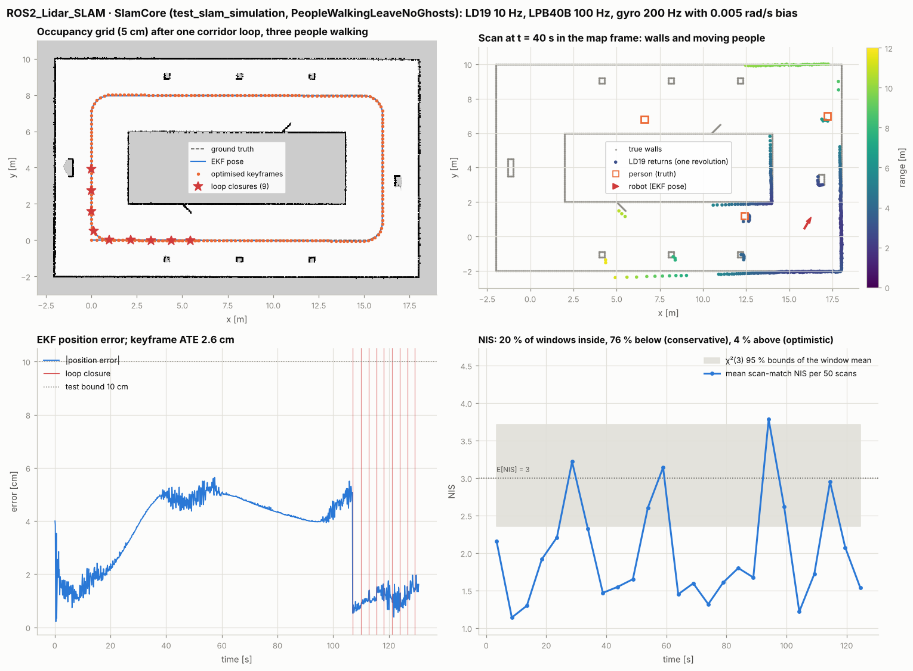
ROS2_Lidar_SLAM, SlamSimulation.PeopleWalkingLeaveNoGhosts: one corridor loop with the LD19 at 10 Hz, the LPB40B range finder, a gyro with a 0.005 rad/s bias and three people walking, dynamic filter on. Map, estimated against true path, loop closures, one scan in the map frame, EKF position error and the scan-match NIS. The NIS sits below its bounds by design: the along-track process noise is sized for 1 m/s² while the robot drives at constant speed (see the test's comment).
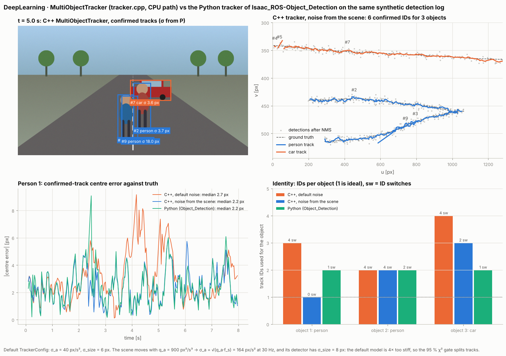
MultiObjectTracker of DeepLearning/ (CPU code path) and the Python tracker of Isaac_ROS-Object_Detection on the same detection log. With its default noise (σ_a = 40 px/s², σ_size = 6 px) the C++ tracker splits tracks: the scene moves with q_a = 900 px²/s³, i.e. σ_a = √(q_a·f_s) = 164 px/s² at 30 Hz, and its detector has σ_size = 8 px. With the noise derived from those numbers it matches the Python tracker. "sw" counts changes of the nearest confirmed track ID on an object.Estimation and control — charts¶

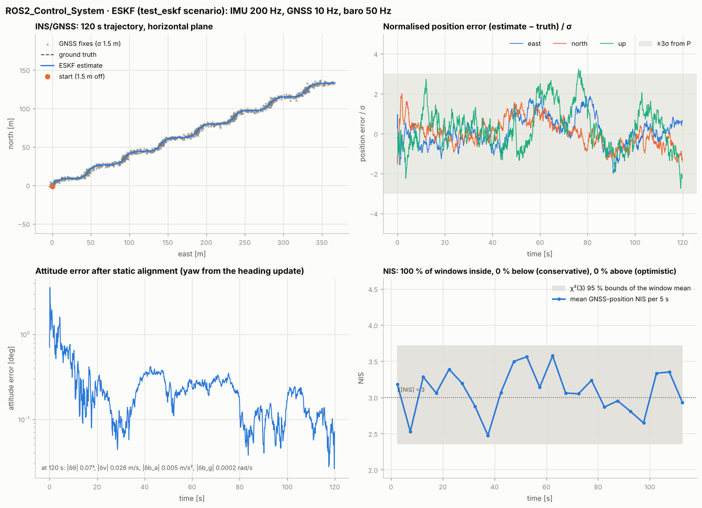
ROS2_Control_System, test_eskf scenario: 120 s INS/GNSS with IMU 200 Hz, GNSS position/velocity/heading 10 Hz and baro 50 Hz, Allan-variance noise, start 1.5 m off. Position error normalised by the filter's own σ, attitude error, and the GNSS-position NIS against χ²(3) bounds.
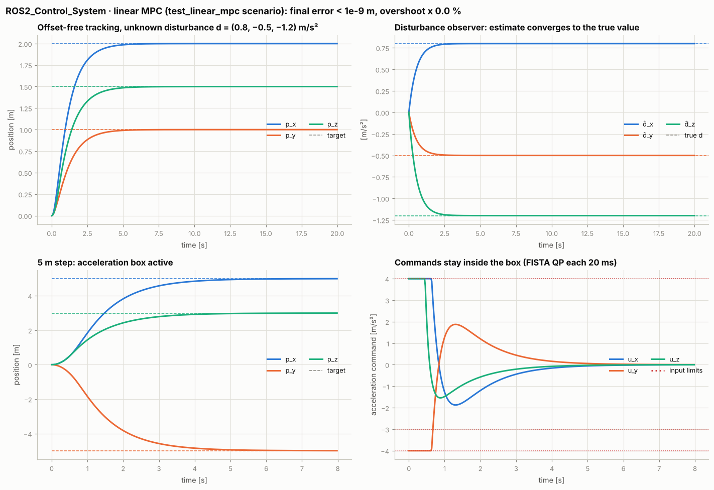
ROS2_Control_System, test_linear_mpc scenarios on the double integrator: offset-free tracking with an unknown constant disturbance (the disturbance observer converges to it), and a 5 m step that drives the commands onto the acceleration box.
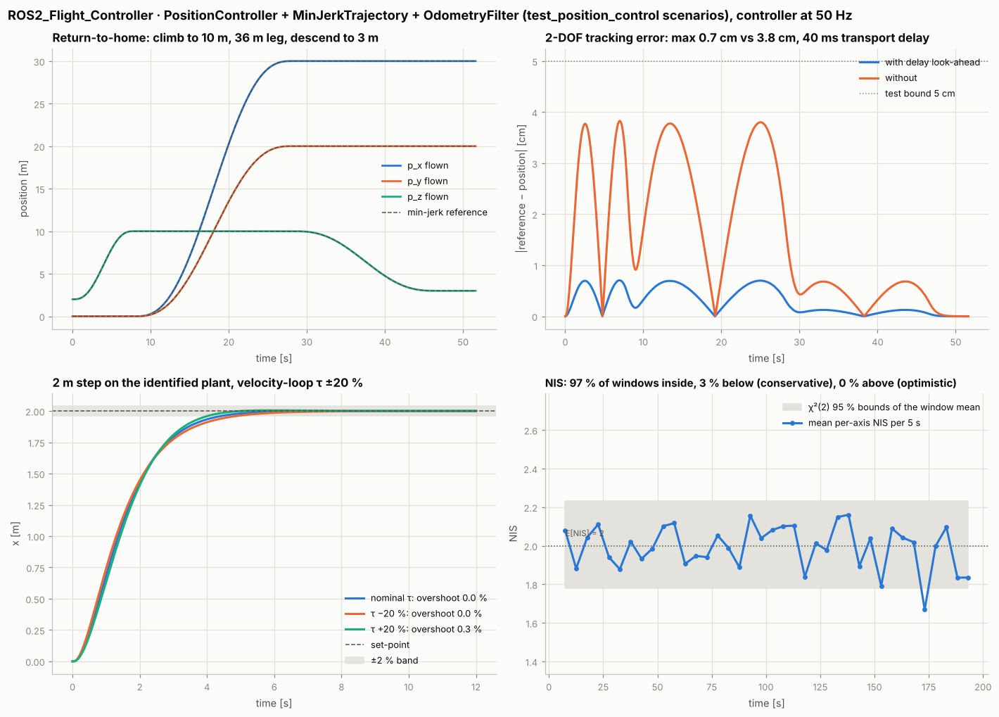
ROS2_Flight_Controller, test_position_control on the identified plant (first-order velocity loop, 40 ms transport delay): min-jerk return-to-home tracked with and without the delay-compensating look-ahead, a 2 m step with the velocity-loop time constant ±20 %, and the odometry-filter NIS on CWNA truth.
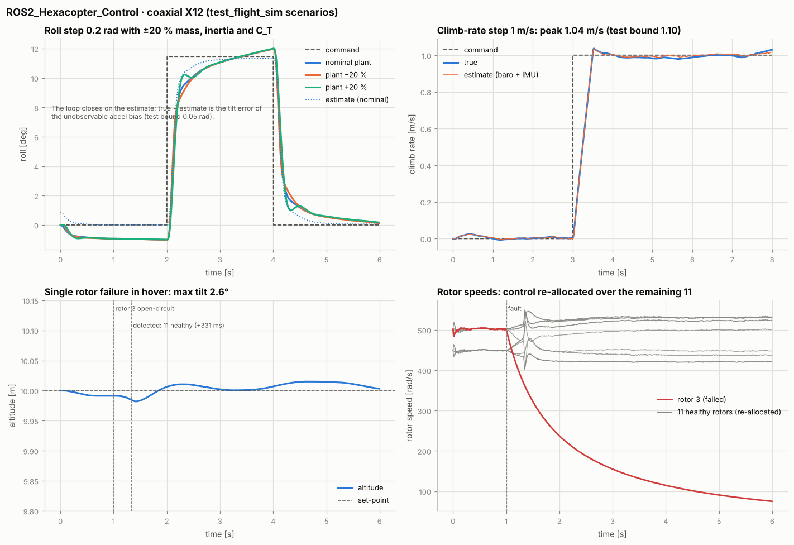
ROS2_Hexacopter_Control, test_flight_sim: roll step with ±20 % mass, inertia and thrust coefficient, climb-rate step, and a rotor that goes open-circuit in hover — the fault is detected and thrust re-allocated over the 11 remaining rotors.
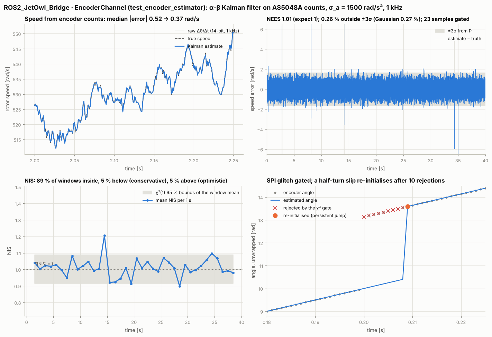
ROS2_JetOwl_Bridge, test_encoder_estimator: speed from a 14-bit encoder at 1 kHz against the raw finite difference, the error against its 3σ bound (NEES), the NIS against χ²(1), and a single SPI glitch gated while a persistent half-turn slip re-initialises the filter.
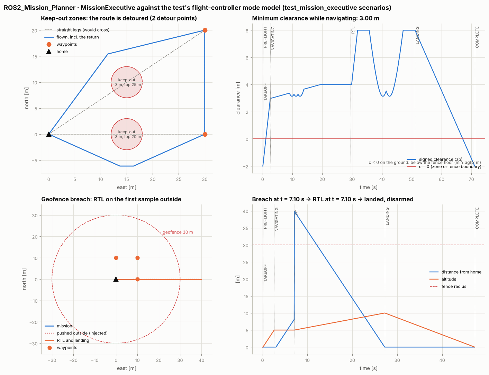
ROS2_Mission_Planner, MissionExecutive against the test's flight-controller mode model: keep-out cylinders detoured on the way out and on the return, and a geofence breach that triggers RTL on the first sample outside.
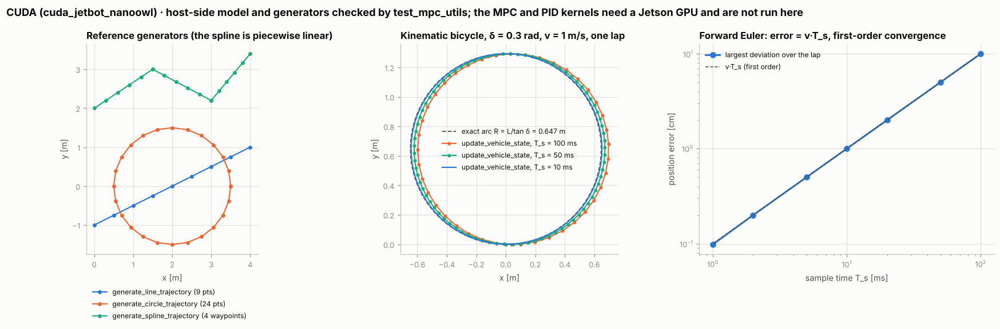
CUDA/ host-side code checked by test_mpc_utils: the reference generators and the kinematic bicycle update_vehicle_state, compared with the exact constant-steering arc — forward Euler, error v·T_s. The MPC and PID kernels need a Jetson GPU; no figure of them is claimed here.Firmware screens¶
The Remote UAV operator interface is rendered by the firmware's own LVGL code in its host simulation: Remote UAV — Screens from the simulation.

Regenerate¶
# Ubuntu 24.04 host: compilers, gtest, Eigen, yaml-cpp, OpenCV, OpenSSL, i2c headers
sudo apt-get install build-essential cmake libgtest-dev libgmock-dev libeigen3-dev \
libyaml-cpp-dev libopencv-dev libssl-dev libi2c-dev
pip install numpy scipy matplotlib opencv-python-headless pytest smbus2 pillow
pip install nvidia-cuda-runtime-cu12 nvidia-cuda-nvcc-cu12 # headers only: CUDA/ and DeepLearning/ host code
git submodule update --init Microcontroller/JetOwl_FlightControl Microcontroller/JetOwl_Vision
python3 Scripts/docs_figures/host_tests.py # test run, chart and the table above
python3 Scripts/docs_figures/figures.py # scenes and charts (about 1.5 min)
python3 Scripts/docs_figures/remote_uav_screens.py # Remote UAV screens (fetches LVGL 9.2.2)
Builds go to build/docs_figures/ (ignored by git). --only <name> limits either script to some packages; see Scripts/docs_figures/README.md.